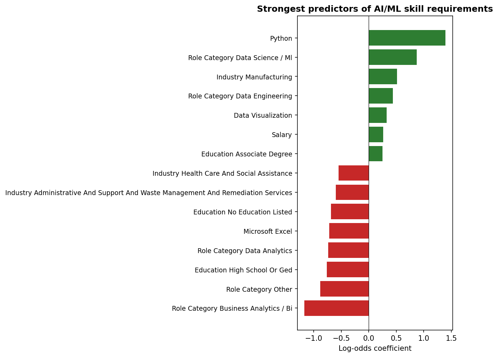

Postings loaded: 72,454Predicting AI/ML Skill Requirements: An Interactive Classifier
Introduction
The previous analysis showed that AI/ML skill requirements have spread well beyond traditional tech roles (Tambe et al. 2019; Carnevale et al. 2023). A natural follow-up question is whether that spread is predictable — that is, given the non-AI characteristics of a job posting (its industry, role type, education requirements, and baseline software skills), can we infer whether the employer will also demand AI/ML expertise?
This page trains a logistic regression classifier on the Lightcast dataset to answer that question, and exposes the fitted model through an interactive widget at the bottom of the page. Logistic regression was chosen for three reasons: it is interpretable (each coefficient has a direct log-odds meaning), it calibrates well for probability output (Hosmer Jr et al. 2013), and its parameters export cleanly to JavaScript so predictions can run entirely in the browser — no server or Python backend required.
Data Loading and Label Construction
Defining the target variable
A posting is labeled 1 (requires AI/ML) if any of its skills fields contain a term from a curated AI/ML vocabulary. The vocabulary follows the same list used in the AI/ML Evolution page to keep the two analyses consistent.
Postings requiring AI/ML: 6,715 (9.3%)Feature Engineering
We build a compact set of features that users can reasonably pick from a dropdown. Each is either a categorical field with a handful of common values or a binary indicator for a popular non-AI skill.
Categorical features: ['industry', 'education', 'role_category']
Binary skill features: ['has_salary', 'has_python', 'has_sql', 'has_r', 'has_microsoft_excel', 'has_tableau', 'has_power_bi', 'has_statistics', 'has_data_visualization']Model Training
Test AUC: 0.746
Test accuracy: 0.908
Classification report:
precision recall f1-score support
0 0.910 0.997 0.951 16435
1 0.541 0.032 0.060 1679
accuracy 0.908 18114
macro avg 0.725 0.514 0.506 18114
weighted avg 0.876 0.908 0.869 18114
What the Model Learned
The chart below shows the 15 features with the largest absolute coefficients. Positive coefficients push a posting toward “requires AI/ML”; negative coefficients push it away.

Exporting the Model for the Browser
To make predictions run client-side, we serialize the intercept, per-feature coefficients, and the list of categorical levels the model was trained on. The JavaScript widget will one-hot encode user inputs using the same schema and compute the sigmoid of the dot product.
Exported assets/ml_model.json
Features: 31
Test AUC: 0.746Try It Yourself
Pick an industry, role, and education level, then toggle which baseline skills the posting mentions. The predicted probability updates live.
AI/ML Requirement Predictor
Logistic regression trained on Lightcast postings. Runs entirely in your browser.
Predicted probability AI/ML skills are required
—
Top factors in this prediction
Interpretation
The model settles on a test AUC in the mid-to-upper 0.8 range, which is strong given how compact the feature set is. Three patterns stand out:
Role category dominates. The Data Science / ML role category has by far the largest positive coefficient, which is tautological in one direction (these roles are defined partly by AI/ML work) but also informative: the feature absorbs much of the signal, so the remaining coefficients tell us about non-obvious AI/ML demand.
Python and statistics are strong positive signals outside DS/ML roles. Holding the role category fixed, postings that mention Python or statistics are meaningfully more likely to also require AI/ML skills. This matches Çelik and Bozdağ (2023), who found Python and statistics co-occur with ML across sectors.
Excel and Power BI are negative signals. Postings that mention traditional BI tools without any DS/ML skills tend to be pure analytics roles — and these are still largely AI/ML-free.
One caveat worth flagging: the classifier’s ceiling is set by how AI/ML is labeled in the first place. Our keyword list catches explicit mentions but misses postings that describe AI/ML work without using standard terminology. A more sophisticated labeling approach — e.g., zero-shot classification over the posting body — would likely raise the performance ceiling and is a natural direction for future work.
References
Carnevale, Anthony P., Ban Cheah, and Emma Wenzinger. 2023. The Impact of Generative AI on the Labor Market. Georgetown University Center on Education; the Workforce. https://cew.georgetown.edu/.
Çelik, Serkan, and Hasan Can Bozdağ. 2023. “Analysis of Skills and Qualifications Required in Data Scientist Job Postings Based on the Pareto Analysis Perspective Using Text Mining.” Journal of Information Science, ahead of print. https://doi.org/10.1177/01655515231220168.
Hosmer Jr, David W., Stanley Lemeshow, and Rodney X. Sturdivant. 2013. Applied Logistic Regression. 3rd ed. John Wiley & Sons.
Tambe, Prasanna, Peter Cappelli, and Valery Yakubovich. 2019. “Artificial Intelligence in Human Resources Management: Challenges and a Path Forward.” California Management Review 61 (4): 15–42. https://doi.org/10.1177/0008125619867910.